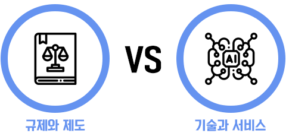
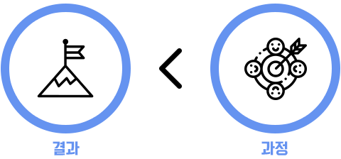
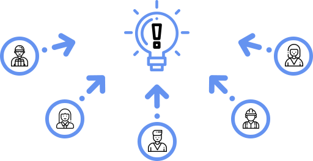
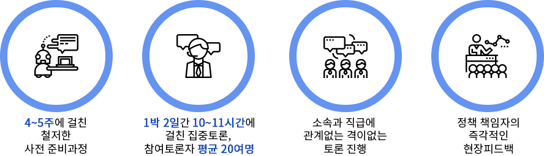
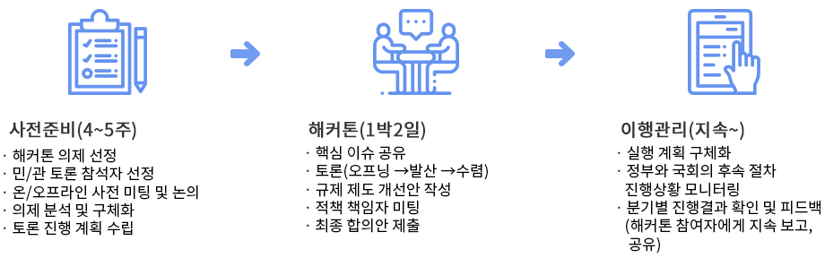
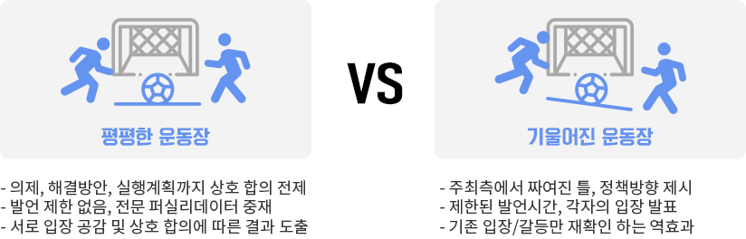
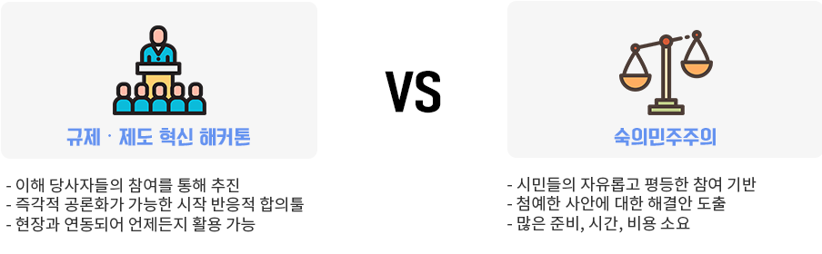
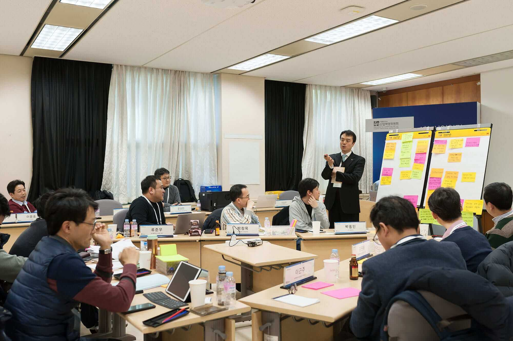

-
추진배경
새로운 기술과 서비스가 등장함에 따라 기존 규제․제도와 충돌하는 사례가 많아지게 되었습니다.
민간은 경직된 규제로 인해 새로운 시장 및 산업창출에 애로를 호소하고 있습니다.
그러나 제도이슈는 다양한 이해당사자가 관련되어 있고, 과거-현재-미래가 공존하고 있어 어느 한쪽으로만은 답을 낼 수 없습니다.
또한 한국은 민주주의 국가로 정부의 일반적인 정책추진이 아닌 사회적 합의가 필수적입니다.
-
필요성
과거 정부에서도 민간의 끊임없는 규제‧제도혁신 요구에 대응해 노력해왔으나 성공하지 못한 이유는
진정한 조정‧중재 없이 정답을 빨리 내는 것에만 집중했기 때문입니다.그렇기에, 정답을 찾는 토론의 과정과 프로세스가 중요합니다.
이것이 사회적 합의를 이루기 위한 새로운 방식, “규제‧제도혁신 해커톤”이 필요한 이유입니다.
-
목적과 효과작은 신뢰의 서클 형성 → 사회적 신뢰를 만들기 위한 토대 - 4차산업혁명위원회가 공정하고 중립적인 중재자로서 지속․반복적인 ‘공론의 장’ 마련- 정부의 규제관련 업무방식을 문제해결 중심 보텀업(bottom-up)으로 전환하고 사회 전반에 신뢰와 협력의 분위기 조성
-
규제•제도 혁신 해커톤 특징- 의제, 해결방안, 실행계획까지 상호 합의전제- 발언 제한 없음, 전문 퍼실리테이터 중재- 최종 합의문 작성 → 관련 부처 연계 → 이행결과 점검 및 모니터링
-
진행방식 및 과정사회적으로 찬반이 있거나 공론화가 필요한 영역에서 이해관계자간 논란이 있고
사회적 합의가 시급한 의제를 선정하여 중점적으로 토론합니다. -
4차산업혁명위원회 역할다양한 이해관계자가 마음껏 토론할 수 있는 판을 깔아주는 역할
☞ 시민단체, 기존기업, 신규기업, 정부 등 다양한 이해관계자간 원활한 토론을 위한 중재 및 조정자 역할 수행
“4차위는 정답을 내는 주체가 아니라 정답을 찾아가는 과정의 판을 깔아주는 주체입니다.
판을 깔아주는 주체가 이미 정답을 갖고 있거나 어떤 방향으로 가려고 하면 참여한 분들이 참여를 거부하게 될 것입니다.
그렇기에 4차위는 철저하게 판을 깔아주는 중재자 역할을 할 것입니다." -
다양한 사회적 합의도구 : 규제‧제도혁신 해커톤 vs 공청회"해커톤의 핵심 정체성은 `평평한 운동장`을 만드는 것입니다.방향을 정해놓고 토론을 하는 것이 아니라 모든 가능성이 열려 있어야 진정한 의미의 합의를 이룰 수 있습니다.
-
다양한 사회적 합의도구 : 규제‧제도혁신 해커톤 vs 숙의민주주의정부 부처 內 전문가 위원회신속하게 전문적이고 합리적인 의견 수렴 가능패쇄적 의견수렴으로 다양한 측면의 의견 반영 어려움
-
해커톤 관련 언론보도[논설위원이 간다] 끝장 토론 해커톤 합의, 빅데이터 캐는 계기 될까
출처: 중앙일보 / 서경호 논설위원(2018.04.19)
기사보기